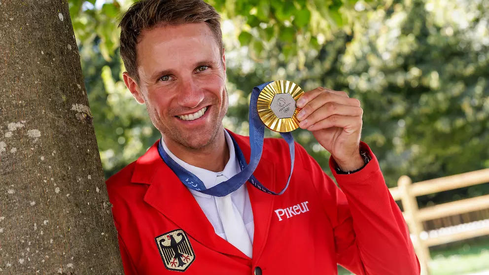

В 2024 году чемпион Олимпийских игр по конкуру стал немецкий спортсмен Кристиан Кукук, который выиграл индивидуальное золото, завершив финал 6 августа без штрафных очков.
Второе место занял швейцарец Стив Герда

A бронза досталась голландцу Майкелу ван дер Влетену.

Эти состязания проходили на арене Версальского дворца в Париже в рамках Олимпиады-2024.
В командном первенстве по конкуре победу одержала сборная Великобритании с результатом 91,30. Второе место заняла команда Франции (103,60), а третье — команда Японии (115,80).